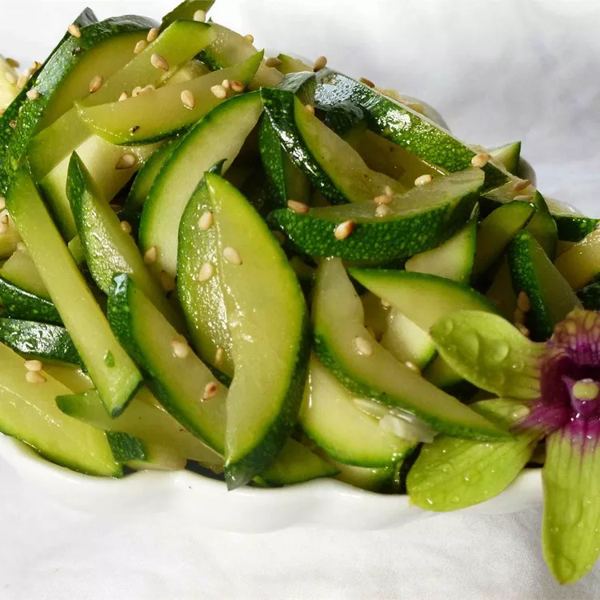

Asian Style Zucchini
Description
Thick zucchini slices are lightly browned in butter and cooked with soy sauce and sesame seeds.
This makes a fabulous summer side dish!
Ingriedient
1 teaspoon butter
1 large zucchini, halved lengthwise and cut into 1 inch slices
2 tablespoons soy sauce, divided
2 tablespoons sesame seeds
garlic powder to taste
ground black pepper to tast
Steps
Melt the butter in a skillet over medium heat.
Stir in the zucchini, and cook until lightly browned.
Sprinkle with soy sauce and sesame seeds.
Season with garlic powder and pepper, and continue cooking until zucchini is well coated and tender.